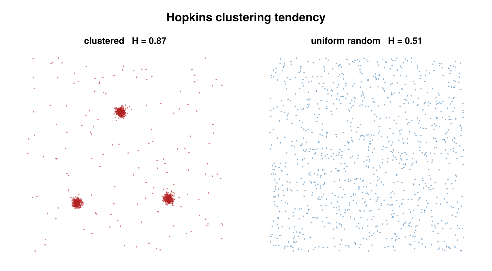

Hopkins statistic
A cluster_statistics backend, selected by HopkinsConfig, that measures the clustering tendency of an unlabeled point set — whether the data is clustered at all, before any cluster is actually formed. The statistic is sample-based and uses a KDTree nearest-neighbor backend (NearestNeighbors.jl).

Hopkins H on clustered data (H → 1) versus spatially-uniform data (H ≈ 0.5).
Concept
Clustering tendency is a separate question from clustering itself. Algorithms like DBSCAN will partition any input into clusters and noise; the Hopkins statistic instead asks the prior question — is there structure worth clustering, or is the point set indistinguishable from spatial randomness?
It answers this by comparing two sets of nearest-neighbor distances: the NN distances of real data points to other real points, against the NN distances of uniformly-sampled synthetic points (drawn from the same bounding box) to the real data. When the data is clustered, real points sit close to their neighbors (small real-to-real distances) while a uniform point typically lands in empty space (large synthetic-to-data distances), driving the statistic toward 1. When the data is itself uniform, the two distance sets look alike and the statistic sits near 0.5.
How it works
For each repeat, with $m$ = n_samples and the data living in $d$ dimensions ($d = 2$, or $d = 3$ when use_3d = true):
- Synthetic reference points. Draw $m$ points uniformly in the per-group axis-aligned bounding box. For each reference point, let $u_i$ be its nearest-neighbor distance to the real data (a
k = 1KDTree query). - Sampled real points. Draw $m$ real points without replacement from the data set. For each sampled point, let $w_i$ be its nearest-neighbor distance to the other real points, excluding itself (a
k = 2KDTree query, taking the second-nearest, since the nearest neighbor of a data point in its own tree is itself at distance 0).
The Hopkins statistic for that repeat raises each distance to the power $d$ (the spatial dimension) and forms:
\[H = \frac{\sum_{i=1}^{m} u_i^{\,d}} {\sum_{i=1}^{m} u_i^{\,d} + \sum_{i=1}^{m} w_i^{\,d}}\]
When the denominator $\sum u_i^{\,d} + \sum w_i^{\,d}$ is exactly 0, that repeat's $H$ is NaN. The reported value is the mean of $H$ over the random_repeats independent repeats.
Configuration
HopkinsConfig <: AbstractStatisticsConfig:
| field | default | unit | meaning |
|---|---|---|---|
n_samples | 20 | — | number of reference / sampled points $m$ per repeat; if it exceeds a group's point count, that group returns NaN (not an error) |
random_repeats | 1 | — | number of independent repeats to average; higher reduces variance at linear cost |
seed | nothing | — | when set (Int), seeds an internal Xoshiro for reproducibility; when nothing, uses the global RNG |
use_3d | false | — | include the z-coordinate and use $d = 3$ in the formula |
per_dataset | true | — | when true, compute Hopkins per dataset and report the across-dataset mean as statistic; when false, pool all emitters into a single $H$ |
region | nothing | — | observation window for the uniform reference points (2D). nothing = data bounding box; a polygon Vector{NTuple{2,Float64}} = rejection-sample references inside it; :metadata = read smld.metadata["edge_outer_polygon"] (written by classify_emitters); Dict(dataset_id => polygon) = per dataset. Incompatible with use_3d = true |
Validated at dispatch entry: n_samples ≥ 1 and random_repeats ≥ 1, else an ArgumentError is raised.
using SMLMClustering
cfg = HopkinsConfig(
n_samples = 50, # reference / sampled point count per repeat
random_repeats = 10, # average over independent repeats
seed = 1, # RNG seed for reproducibility
use_3d = false,
per_dataset = true, # per-dataset H in extras + across-dataset mean as statistic
)
(_, info) = cluster_statistics(smld, cfg)
println("Hopkins H = ", round(info.statistic, digits = 3))
per_ds = info.extras[:hopkins_per_dataset] # Vector{Float64}, one H per dataset
println("per-dataset H = ", per_ds)Output & interpretation
cluster_statistics returns (smld, info::ClusterStatisticsInfo). The SMLD is passed through unchanged — the Hopkins backend reads coordinates only and writes nothing back.
info.statistic— the Hopkins $H$. Whenper_dataset = truethis is the mean over datasets with a non-NaNresult (NaNonly if every dataset isNaN); whenper_dataset = falseit is the single pooled $H$.info.statistic_nameandinfo.algorithmare both:hopkins.info.extras[:hopkins_per_dataset]— aVector{Float64}holding the per-dataset $H$ (one entry per group, in dataset order). This key is present only whenper_dataset = true; withper_dataset = falsetheextrasdictionary is empty.
Reading the value:
| $H$ | meaning |
|---|---|
| $\approx 0.5$ | data is statistically indistinguishable from uniform spatial randomness (Poisson) |
| $\to 1.0$ | strong clustering tendency |
| $\to 0.0$ | regular / lattice-like (anti-clustering, even spacing) |
Edge cases return NaN for the affected group rather than erroring:
- an empty group (no emitters in that dataset),
n_samples > n_pointsfor the group (or fewer than 2 points),- a zero-extent bounding box — all points coincident along some axis, so uniform sampling is degenerate.
With per_dataset = true, a NaN group is recorded in extras[:hopkins_per_dataset] and excluded from the statistic mean.
Notes & caveats
- Observation window (the
regionfield). Hopkins is window-sensitive — its null is "uniform within a stated window", and the reference points define that window. The default window is the data bounding box, so data that is uniform but confined to a non-convex boundary (e.g. a cell) reads as falsely clustered: bbox references fall in the empty corners, far from any data, inflating $H$. Pass aregionpolygon (or:metadatato use EdgeClassify'sedge_outer_polygon) to sample references inside the actual domain and recover the correct null. - Sampling variance. $H$ is a Monte-Carlo estimate: each call draws random reference and sample points, so successive runs differ. Raise
random_repeatsto average the variance down (linear cost), and setseedto make a run bit-for-bit reproducible. n_samplesrelative to group size.n_samplesmust not exceed the number of points in a group; oversized requests yieldNaNfor that group. Smaller $m$ gives a noisier estimate, so pair small samples with more repeats.- 2D / 3D. The default is 2D ($d = 2$); set
use_3d = trueto include the z-coordinate and use $d = 3$ in both the KDTree queries and the distance power.
References
- Hopkins, B. and Skellam, J. G. (1954). "A new method for determining the type of distribution of plant individuals." Annals of Botany, 18(2), 213–227.